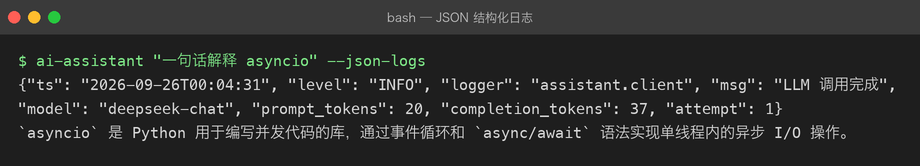
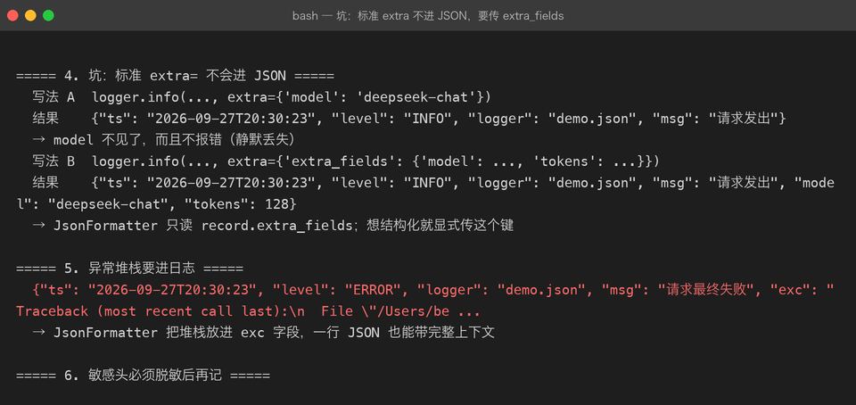

Project 02 — Chapter 06：Logging【日志】
状态：✅ 已校对 对应代码：
src/assistant/logging_setup.py
1. 项目要增加什么能力
Project 01 出问题时的排查方式：
print("准备请求...") # 临时加
print("响应:", resp) # 看完忘删，进了 git
print("!!!! 到这里了") # 经典print 的四个致命缺陷：
1. 没有级别 —— 分不清「正常信息」和「出错了」
2. 没有时间戳 —— 不知道什么时候发生的
3. 没有来源 —— 不知道是哪行代码打的
4. 关不掉 —— 上线后只能去删代码本章目标：
用
logging替换所有
2. 为什么需要这个知识
AI 应用尤其需要日志，因为它的失败是半透明的：
HTTP 200 但内容为空 → 只有日志能记录原始响应
模型返回了截断的内容 → 需要记录 token 消耗
偶发超时 → 没有时间戳根本无法复盘
多轮对话状态错乱 → 需要记录每轮的 messages更现实的一点：LLM 调用花的是真金白银。没有日志，你连「这个月为什么账单翻倍」都答不上来。
3. 核心概念
3.1 五个级别（从轻到重）
| 级别 | 用途 | 生产环境默认 |
|---|---|---|
DEBUG | 调试细节：完整请求体、headers | 关闭 |
INFO | 正常流程：启动了、收到请求、调用完成 | 开启 |
WARNING | 有点不对但还能跑：重试成功、降级了 | 开启 |
ERROR | 某个操作失败：这次调用挂了 | 开启 |
CRITICAL | 系统级崩溃：配置缺失、端口被占 | 开启 |
判断口诀：
会不会有人需要为这件事半夜起床？ 会 → ERROR；不会但要留痕 → INFO/WARNING。
3.2 三个核心组件
Logger —— 你要用的那个东西（logger.info("...")）
Handler —— 日志往哪去（控制台 / 文件 / 网络）
Formatter —— 长什么样（时间、级别、模块名、消息）关系图：
logger.info("msg")
↓
Logger（判断级别是否够）
↓
Handler（决定输出到哪）
↓
Formatter（拼成最终字符串）
↓
stdout / 文件3.3 每个模块一个 logger
# assistant/client.py
import logging
logger = logging.getLogger(__name__) # __name__ == "assistant.client"用 __name__ 的好处：日志里会显示 assistant.client，一眼看出是哪个模块打的。
2026-09-25 23:41:02 INFO assistant.client 调用 LLM: model=deepseek-chat
2026-09-25 23:41:05 WARNING assistant.client 触发限流，2s 后重试（第 1 次）
2026-09-25 23:41:07 INFO assistant.service 回答生成完毕，耗时 4.8s3.4 只在入口配置 handler
库代码（client.py / service.py）绝不配置 handler，只管 logger.info(...)。
配置只在程序入口做一次：
# src/assistant/logging_setup.py
import logging
import sys
def setup_logging(level: str = "INFO", json_format: bool = False) -> None:
handler = logging.StreamHandler(sys.stdout)
if json_format:
handler.setFormatter(JsonFormatter())
else:
handler.setFormatter(logging.Formatter(
fmt="%(asctime)s %(levelname)-8s %(name)s %(message)s",
datefmt="%Y-%m-%d %H:%M:%S",
))
root = logging.getLogger()
root.handlers.clear() # 防止重复输出
root.addHandler(handler)
root.setLevel(level)
# main.py
def main():
settings = Settings.from_env()
setup_logging(settings.log_level)
...为什么「库不配 handler」：库是被别人 import 的，你配了 handler 会污染使用者的日志输出。
3.5 结构化日志
人类看的日志：
INFO 调用 LLM 完成，耗时 4.8s机器看的日志（生产环境用）：
{"ts":"2026-09-25T23:41:07","level":"INFO","logger":"assistant.client","model":"deepseek-chat","latency_ms":4800,"prompt_tokens":128}为什么需要 JSON：日志会被收集到 ELK / Loki / 云厂商日志服务里，JSON 才能被检索和聚合（比如「统计 p99 延迟」）。
最小实现：
import json
import logging
class JsonFormatter(logging.Formatter):
def format(self, record: logging.LogRecord) -> str:
payload = {
"ts": self.formatTime(record, "%Y-%m-%dT%H:%M:%S"),
"level": record.levelname,
"logger": record.name,
"msg": record.getMessage(),
}
if record.exc_info:
payload["exc"] = self.formatException(record.exc_info)
extra = getattr(record, "extra_fields", None)
if extra:
payload.update(extra)
return json.dumps(payload, ensure_ascii=False)带上下文地打日志：
logger.info("LLM 调用完成", extra={"extra_fields": {"latency_ms": 4800, "model": "deepseek-chat"}})3.6 异常要记堆栈
try:
answer = await client.chat(messages)
except LLMError:
logger.exception("LLM 调用失败") # ✅ 自动带上完整堆栈
raiselogger.exception(...) 等价于 logger.error(..., exc_info=True)，但只能在 except 块里用。
4. 项目代码
src/assistant/
├── logging_setup.py # setup_logging() + JsonFormatter（唯一配置点）
├── client.py # logger = getLogger(__name__)，只打不配
└── service.py # 同上打点位置（这些是真的有用）：
启动 INFO 配置加载完成：model=xxx, base_url=xxx（不含 key）
每次调用 INFO 请求开始：model, prompt_tokens
INFO 请求完成：latency_ms, completion_tokens
重试 WARNING 触发限流/超时，第 N 次重试
失败 ERROR 调用失败：错误类型、HTTP 状态、请求 ID5. Java ↔ Python 对比
| Java (SLF4J + Logback) | Python (logging) | 说明 |
|---|---|---|
LoggerFactory.getLogger(X.class) | logging.getLogger(__name__) | 同 |
log.info("a={}", a) | logger.info("a=%s", a) | 都是懒格式化，别用 f-string |
log.error("msg", e) | logger.exception("msg") | 同 |
logback.xml | logging.basicConfig() / dictConfig | Python 也支持 dictConfig |
| MDC（诊断上下文） | extra={"extra_fields": {...}} | Python 没有线程级 MDC 的官方方案 |
@Slf4j (Lombok) | 模块级 logger = ... | 同 |
| Appender | Handler | 同 |
一个容易踩的细节：SLF4J 的 {} 在 Python 里是 %s，别写串了。
6. 常见坑
坑 1：用 f-string 打日志
logger.info(f"调用 {model} 耗时 {cost:.2f}s") # ❌
logger.info("调用 %s 耗时 %.2fs", model, cost) # ✅区别：f-string 无论日志级别是否开启都会先拼接字符串。上千次调用时这是实打实的开销，而且 %s 版本能让日志聚合系统把「同一模板的日志」归为一类。
坑 2：重复输出（每条日志打两遍）
原因：basicConfig() 被调用了多次，或者既有 root handler 又加了新的。
解决：加 handler 前 root.handlers.clear()。
坑 3：在库里 basicConfig()
# client.py 里写这个 = 污染调用方
logging.basicConfig(level=logging.INFO)库只 getLogger(__name__)，配置交给入口。
坑 4：日志里泄露 Key
logger.debug("请求头: %s", headers) # headers 里有 Authorization: Bearer sk-xxx打日志前脱敏：
safe = {k: ("***" if k.lower() == "authorization" else v) for k, v in headers.items()}
logger.debug("请求头: %s", safe)坑 5：用 print 调试后忘了删
CI 里加一条检查（本项目 .github/workflows/ci.yml 可以扩展）：
grep -rn "print(" src/ && echo "src/ 里不应该有 print" && exit 1坑 6：logger.exception 放在 except 外面
except LLMError:
pass
logger.exception("失败") # ❌ 没有异常上下文，堆栈是 None7. 实战挑战
挑战 1：实现 JsonFormatter，并让 LOG_FORMAT=json 环境变量切换人类可读 / JSON 两种格式。
挑战 2：给每次 LLM 调用加一个 request_id（uuid4().hex[:8]），并让它出现在该次调用的所有日志里。
挑战 3（进阶）：写一个 @log_call 装饰器，自动记录任意函数的入参（脱敏）、耗时、异常，不用在每个函数里手写 logger。
8. 主动回忆
- 五个日志级别分别用在什么场景？
- Logger / Handler / Formatter 各自负责什么？
- 为什么库代码不应该配置 handler？
- 为什么
logger.info("a=%s", a)比 f-string 好？ - 生产环境为什么要 JSON 日志？
logger.exception和logger.error有什么区别？
9. 本节完成标准
- [ ]
src/下没有任何print(，全部改为logger.* - [ ] 每个模块用
logging.getLogger(__name__) - [ ]
setup_logging()只在入口调用一次，且可切换 JSON 格式 - [ ] 敏感信息（API Key / Authorization 头）已脱敏
- [ ] 关键路径有耗时打点，能从日志算出一次调用的延迟
实际效果——LOG_FORMAT=json 切换后，一次调用带出 model / prompt_tokens / completion_tokens：


下一章：07-testing-and-debugging.md —— 让改动不再心慌。